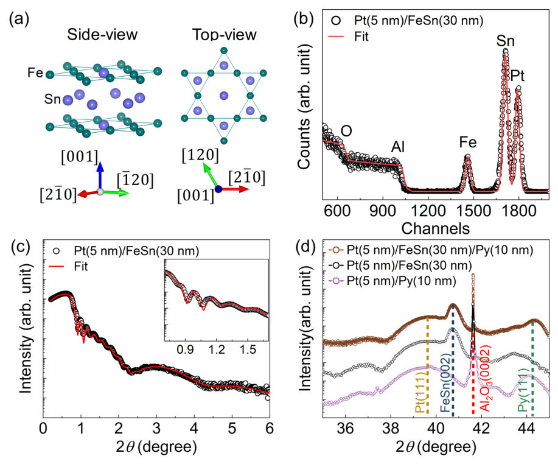
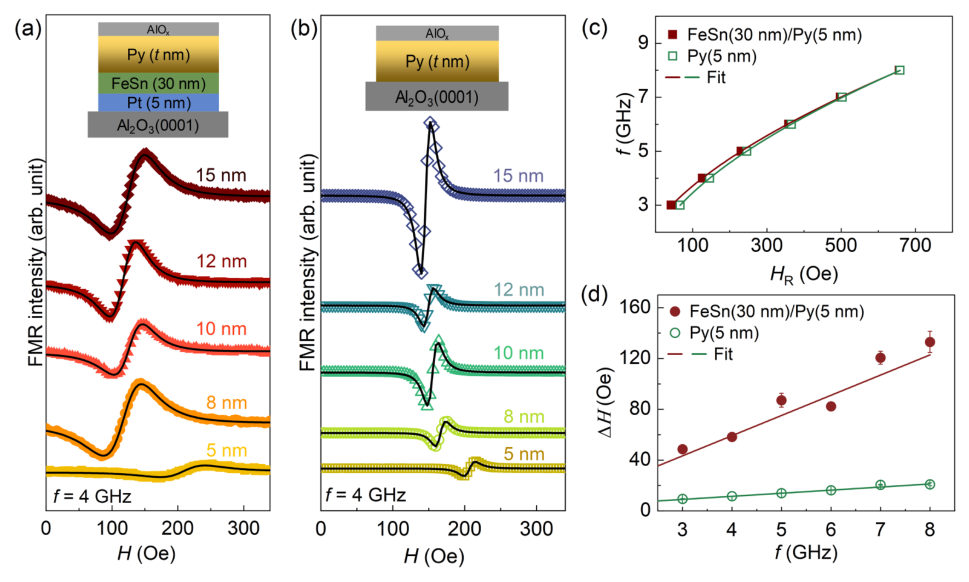
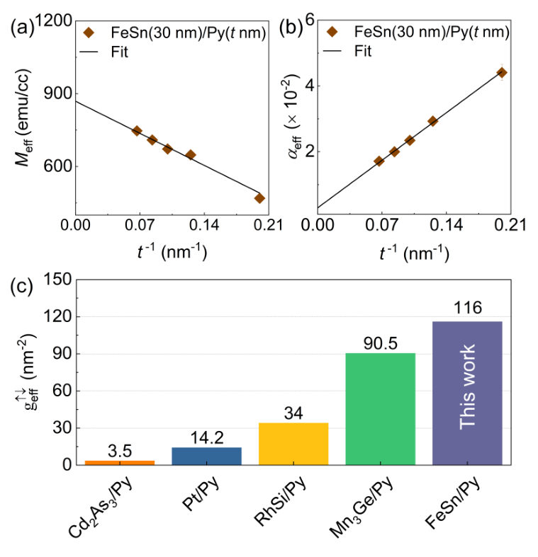
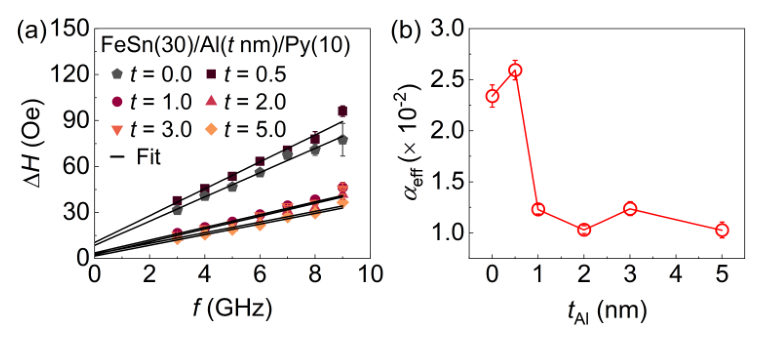
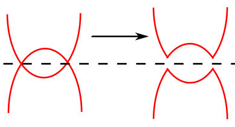
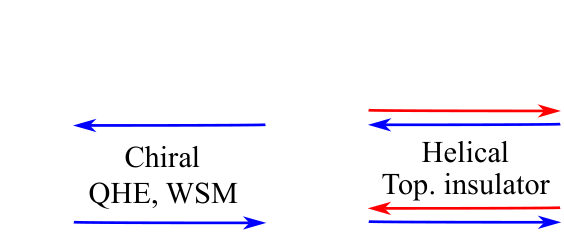
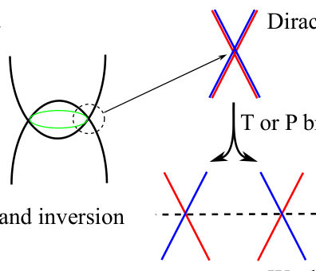
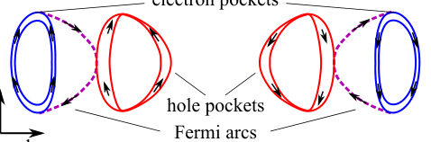
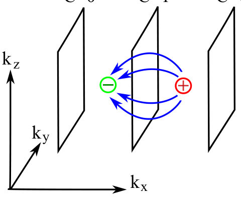

Authors: E. V. Deviatov
Type: both · Category: other · PDF: https://arxiv.org/pdf/2605.22278v1
Analysis basis: full PDF text, analyzed in chunks





Summary. This review examines how the unique topological features of Weyl and Dirac semimetals, such as Fermi arcs and Berry curvature, manifest in electronic transport. It highlights how advanced experimental probes like the Josephson effect and nonlinear Hall measurements can isolate surface-state physics from bulk contributions. The findings suggest potential applications in high-frequency electronics and spintronics.
Why it may be interesting. not directly relevant
Main problem. The central challenge is distinguishing topologically protected surface state contributions from the gapless bulk spectrum in transport measurements and understanding the origin of chiral surface states in Weyl semimetals.
Main result. The review demonstrates that superconducting proximity effects, spin-polarized transport, and the nonlinear anomalous Hall effect serve as powerful diagnostic tools to identify topological surface states in materials like WTe2, Co3Sn2S2, and GeTe.
Method. The paper reviews experimental techniques including ARPES for visualizing Fermi arcs, SNS junction measurements for Josephson current, and second-harmonic voltage measurements to isolate the nonlinear Hall effect.
Model / system. The study focuses on topological semimetals, specifically Weyl semimetals (WSMs), Dirac semimetals, and nodal-line semimetals, including specific materials like WTe2, Co3Sn2S2, and Fe3GeTe2.
Key observables. Hall resistance (linear and nonlinear), magnetoresistance, critical current (Ic), voltage-current (V-I) characteristics, and magnetization hysteresis loops.
Important parameters / regimes. Temperature ranges (30 mK to room temperature), magnetic field dependence, spin-momentum locking, and Berry curvature.
Assumptions / limitations. The difficulty in distinguishing surface transport from trivial bulk effects due to the gapless bulk spectrum is a primary experimental limitation.
Figures summary. Figures illustrate band inversion mechanisms, comparisons of chiral vs. helical edge states, the formation of Fermi arcs, the fabrication of contact patterns, and experimental V-I and Hall voltage characteristics.
Paper structure. The paper progresses from defining topological semimetals and their electronic structures to discussing specific transport phenomena including superconducting proximity effects, spin-dependent transport (spin valves), and the nonlinear anomalous Hall effect.
For the solid state physics, recent interest to topological systems is mostly connected with topological semimetals, in particular, to Weyl ones as the most representative semimetal type. Like other topological materials, e.g. topological and Chern insulators, topological semimetals acquire topologically protected surface states with linear dispersion. In contrast to helical surface states in topological insulators, the surface states are chiral for Weyl semimetals, similarly to Chern insulators, which allows to consider Weyl semimetals as the three-dimensional analog of the quantum Hall effect regime. Weyl semimetals are also interesting for spin-dependent effects, due to the spin-momentum locking in the topological surface states. For topological semimetals, the main problem of transport investigations is to reveal the surface states contribution in the material with gapless bulk spectrum. Here, we present review of experimental results on charge and spin transport in topological semimetals: charge transport in different superconducting proximity devices; spin-dependent transport; magnetic response of the topological surface states; non-linear anomalous Hall effect as the direct manifestation of the non-zero Berry curvature in topological semimetals. Possible applications are also considered for this new class of topological materials.
Authors: Kacho Imtiyaz Ali Khan, Nidhi Kandwal, Pankhuri Gupta, Deeksha Khandelwal, Akash Kumar, Johan Åkerman, Pranaba Kishor Muduli
Type: experiment · Category: other · PDF: https://arxiv.org/pdf/2605.22180v1
Analysis basis: full PDF text, analyzed in chunks




Summary. This paper demonstrates that the kagome-derived topological surface states of the antiferromagnet FeSn enable a giant spin mixing conductance and highly efficient spin-to-charge conversion. This performance significantly outperforms conventional platinum-based spintronic interfaces. These findings suggest that topological semimetals are promising candidates for next-generation, energy-efficient spintronic devices.
Why it may be interesting. not directly relevant
Main problem. The study investigates whether the topologically active [001]-kagome surface states of the antiferromagnetic semimetal FeSn can significantly enhance spin transport and spin-to-charge conversion compared to standard heavy-metal/ferromagnet interfaces.
Main result. The researchers report a giant effective spin mixing conductance of (116 +/- 7) nm^-2 in FeSn/Py heterostructures, which is nearly an order of magnitude higher than standard Pt/Py systems, attributed to the topological kagome surface.
Method. The study uses magnetron sputtering for heterostructure growth, Ferromagnetic Resonance (FMR) to extract spin dynamics, and Inverse Spin Hall Effect (ISHE) measurements to quantify spin-to-charge conversion.
Model / system. The physical system consists of epitaxial FeSn/Py (Ni80Fe20) heterostructures grown on Al2O3(0001) substrates, where FeSn is a kagome-lattice antiferromagnet featuring 3D Dirac fermions and 2D flat bands.
Key observables. Effective spin mixing conductance (g_eff_up_down), Gilbert damping (alpha), Inverse Spin Hall Effect voltage (V_ISHE), and spin-to-charge conversion efficiency (I_C).
Important parameters / regimes. Fe:Sn stoichiometry (52:48 at.%), Py thickness (5-15 nm), Al spacer thickness (0.5-5 nm), and Neel temperature (~368 K).
Assumptions / limitations. The study assumes the enhancement is interfacial, which is verified by the reduction in damping upon inserting an Al spacer layer.
Figures summary. Figure S1 shows the dependence of resonance frequency and linewidth on the resonance field and Py layer thickness for both FeSn/Py and reference Py stacks.
Paper structure. The paper introduces the topological properties of FeSn, describes the experimental growth and structural characterization (XRD, RBS, XRR), presents FMR and ISHE results to demonstrate giant spin mixing conductance, uses an Al spacer to prove the interfacial origin, and concludes with the implications for spintronics.
The topological semimetal FeSn antiferromagnet, characterized by its kagome lattice, two-dimensional flat bands, and Dirac-like surface states, holds immense promise for spintronic applications. In this work, for the first time, we investigate the spin pumping behavior in epitaxial-FeSn/Py (Ni$_{80}$Fe$_{20}$) heterostructures. We report a giant effective spin mixing conductance (g$^{\uparrow \downarrow}_{\mathrm{eff}}$) of $(116\pm 7)$~nm$^{-2}$, which is nearly one order of magnitude higher than that of standard Pt/Py heterostructures. The insertion of a 3 nm Al spacer layer results in a two-fold reduction in the effective damping, confirming the interfacial origin of the large g$^{\uparrow\downarrow}_{\mathrm{eff}}$. Consistently, we observe an order-of-magnitude higher inverse spin Hall effect voltage in the FeSn/Py system compared to a reference Pt/Py film stack. We attribute the giant g$^{\uparrow\downarrow}_{\mathrm{eff}}$ to the direct interfacing of the Py layer with the topologically active [001]-kagome surface of epitaxial-FeSn. These findings establish the critical role of topologically active interfaces for advanced quantum-material-based spintronic devices.